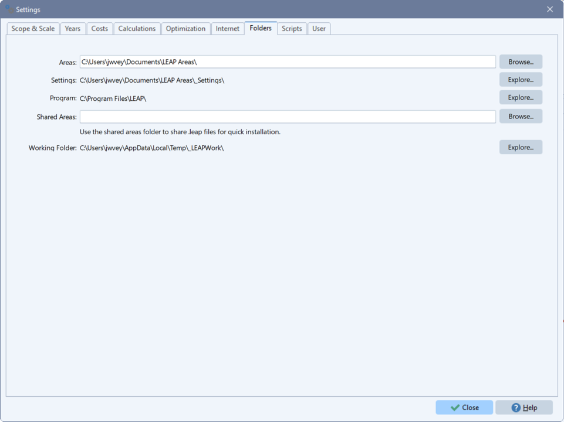

Configuration files
When you calculate a scenario with NEMO, you can provide a configuration file that sets run-time options. The file should be named nemo.toml, nemo.ini, or nemo.cfg and should be available in Julia's working directory. To check the working directory in a Julia session, use the pwd function. To change the working directory, use cd.
NEMO configuration files are text files written in TOML syntax.
Prior to NEMO 2.3, NEMO configuration files were written in ini syntax, not TOML. If you have a legacy ini configuration file, you can convert it to TOML using NEMO's convert_ini_to_toml function.
The following run-time options can be specified in a configuration file.
[calculatescenarioargs]
This block defines options that affect the behavior of calculatescenario. The available options are listed below.
jumpdirectmode
Indicates whether JuMP's direct mode should be used in the scenario calculation. Direct mode bypasses some JuMP features that help to ensure compatibility with a wide range of solvers. These include reformulating (or bridging) the constraints, variables, and optimization objective that NEMO defines as needed to promote cross-solver compatibility. When direct mode is invoked, scenario calculation is generally faster and requires less memory; however, it can result in a solver error in some cases. If this option is set in a configuration file, it overrides the selection of direct mode in the JuMP Model object passed to calculatescenario (via the jumpmodel argument). If jumpmodel does not align with jumpdirectmode, NEMO resets jumpmodel to activate/deactivate direct mode accordingly. This process restores model attributes (except for the choice of solver) and solver parameters to their default values. To ensure solver parameters are retained, specify them in the solver block of the configuration file. For more information on direct mode, see the JuMP documentation.
Type: TOML Boolean
Example: jumpdirectmode = true
jumpbridges
Indicates whether JuMP's bridging features should be used in the scenario calculation (ignored if jumpdirectmode is true, as this implies bridging is disabled). Bridging involves reformulating the constraints, variables, and optimization objective that NEMO defines as needed to promote cross-solver compatibility. When bridging is disabled, scenario calculation is generally faster and requires less memory; however, it can result in a solver error in some cases. If this option is set in a configuration file, it overrides the use of bridging in the JuMP Model object passed to calculatescenario (via the jumpmodel argument). If jumpmodel does not align with jumpbridges, NEMO resets jumpmodel to activate/deactivate bridging accordingly. This process has the same effects as described under jumpdirectmode. For more information on bridging, see the JuMP documentation.
Type: TOML Boolean
Example: jumpbridges = false
calcyears
Years to include in the scenario calculation (should be a subset of the years defined in the scenario database; other years are ignored). As with the corresponding argument for calculatescenario, this option allows you to control whether NEMO performs perfect foresight or limited foresight optimization. The option should be specified as an array of arrays of years - e.g., [[2025,2027],[2030,2032]]. Each inner array is a group of years that NEMO optimizes with perfect foresight; the years in a group can be sparse, allowing you to calculate selected years only for a group. When NEMO runs the scenario calculation, it proceeds through groups of years in the order given in the outer array, optimizing each and using its results as the starting point for the next group of years. Thus, if multiple groups are defined in the outer array, NEMO performs a limited foresight optimization. If more than one group of years is specified, the groups should be in chronological order and should not overlap. If this option is set in a configuration file, it overrides the calcyears argument for calculatescenario.
Type: TOML array of arrays of years
Examples
calcyears = [[2025,2027],[2030,2032]] - Optimize 2025 and 2027 with perfect foresight; then optimize 2030 and 2032 with perfect foresight, using the results from 2025 and 2027 as a starting point.
calcyears = [[2026,2027,2028,2029,2030,2031,2032,2033,2034,2035]] - Optimize 2026-20235 with perfect foresight.
varstosave
List of output variables (Julia variable names) whose values should be saved in the scenario database at the end of the calculation. NEMO adds variables specified in a configuration file to those requested in the varstosave argument for calculatescenario.
Type: TOML array of strings
Example: varstosave = ["vtransmissionannual", "vtransmissionbuilt", "vtransmissionbyline", "vtransmissionexists", "vtotalcapacityannual", "vtradeannual"]
restrictvars
Indicates whether NEMO should conduct additional data analysis to limit the set of variables created in the optimization problem for the scenario. By default, to improve performance, NEMO selectively creates certain variables to avoid combinations of subscripts that do not exist in the scenario's data. This option increases the stringency of this filtering. It requires more processing time as the model is built, but it can substantially reduce the solve time for large models. If this option is specified in a configuration file, it overrides the restrictvars argument for calculatescenario.
Type: TOML Boolean
Example: restrictvars = true
reportzeros
Indicates whether results saved in the scenario database should include values equal to zero. Forgoing zeros can substantially improve the performance of large models. If this option is specified in a configuration file, it overrides the reportzeros argument for calculatescenario.
Type: TOML Boolean
Example: reportzeros = false
continuoustransmission
Indicates whether continuous (true) or binary (false) variables are used to represent investment decisions for candidate transmission lines. Continuous decision variables can decrease model run-time but may reduce the realism of transmission simulations. This option is not relevant in scenarios that do not model transmission. If it is specified in a configuration file, it overrides the continuoustransmission argument for calculatescenario.
Type: TOML Boolean
Example: continuoustransmission = true
forcemip
Indicates whether NEMO is forced to formulate a mixed-integer optimization problem for the scenario. Activating this option can improve performance with some solvers (e.g., CPLEX, Mosek). If this option is specified in a configuration file, it overrides the forcemip argument for calculatescenario. If you do not activate forcemip (in a configuration file or as an argument for calculatescenario), the input parameters in your scenario database determine whether the optimization problem for the scenario is mixed-integer. See the note under Solver compatibility for more information.
Type: TOML Boolean
Example: forcemip = true
startvalsdbpath
Path to a previously calculated scenario database from which NEMO should take starting values for optimization variables. This option is used in conjunction with startvalsvars to warm start optimization. If it is specified in a configuration file, it overrides the startvalsdbpath argument for calculatescenario.
Type: TOML String
Example: startvalsdbpath = "c:\\temp\\warmstart\\warm_start.sqlite"
startvalsvars
Comma-delimited list of variables (Julia variable names) for which starting values should be set. NEMO takes starting values from output variable results saved in the database identified by startvalsdbpath. Saved results are matched to variables in the optimization problem using the variables' subscripts, and starting values are set with JuMP's set_start_value function. If you don't provide a value for startvalsvars, NEMO sets starting values for all variables present in both the optimization problem and the startvalsdbpath database. If startvalsvars is specified in a configuration file, it overrides the startvalsvars argument for calculatescenario.
Type: TOML String
Example: startvalsvars = "vnewcapacity,vtransmissionbuilt"
precalcresultspath
Path to a previously calculated scenario database that NEMO should copy over the database specified by the calculatescenario dbpath argument. This option can also be a directory containing previously calculated scenario databases, in which case NEMO copies any file in the directory with the same name as the dbpath database. If this option is activated, the copying replaces normal scenario optimization. If you set precalcresultspath in a configuration file, it overrides the precalcresultspath argument for calculatescenario.
Type: TOML String
Example: precalcresultspath = "c:/temp/precalc
quiet
Indicates whether NEMO should suppress low-priority status messages (which are otherwise printed to STDOUT). If this option is specified in a configuration file, it overrides the quiet argument for calculatescenario.
Type: TOML Boolean
Example: quiet = false
If you're using NEMO with LEAP, be aware that some versions of LEAP set quiet to true when calling calculatescenario. This means you can't see NEMO's normal output, even in LEAP's log files. To reverse this behavior, add quiet = false to your configuration file.
[solver]
This block defines parameters that NEMO passes to the solver used in calculatescenario. It supports one option as shown below.
parameters
Comma-delimited list of solver run-time parameters. Format: parameter1=value1,parameter2=value2,... NEMO includes logic to ignore parameters that don't apply to a particular solver, so if you use different solvers with your model, you can specify parameters for all of them in this option. There's no need to maintain a different version of the configuration file for each solver.
Type: TOML String
Example: parameters = "CPXPARAM_MIP_Tolerances_MIPGap=0.05,CPXPARAM_Simplex_Perturbation_Indicator=1,NumericFocus=2,MIPGap=0.05,MIPFocus=1,Method=3"
[includes]
This block identifies custom Julia scripts that should be executed with calculatescenario. The available options are listed below.
beforescenariocalc
Path to a Julia script that should be run before NEMO calculates the scenario. The path should be defined relative to the Julia working directory (e.g., ./my_script.jl).
Type: TOML String
Example: beforescenariocalc = "./beforescenariocalc.jl"
afterscenariocalc
Path to a Julia script that should be run after NEMO calculates the scenario. The path should be defined relative to the Julia working directory (e.g., ./my_script.jl).
Type: TOML String
Example: afterscenariocalc = "./afterscenariocalc.jl"
customconstraints
Path to a Julia script that should be run when NEMO builds constraints for the scenario. The script can be used to add custom constraints to the model. The path should be defined relative to the Julia working directory.
Type: TOML String
Example: customconstraints = "./customconstraints.jl"
NEMO comes with a sample configuration file saved at utils/nemo.toml in the NEMO package directory. You can find the NEMO package directory in Julia as follows:
julia> using NemoMod
julia> println(normpath(joinpath(pathof(NemoMod), "..", "..")))Here's an example of a configuration file that sets a few of the available options.
[calculatescenarioargs]
varstosave="vnewcapacity,vtotalcapacityannual"
continuoustransmission=true
[solver]
parameters="CPX_PARAM_DEPIND=-1,CPXPARAM_LPMethod=1" # Parameters for CPLEX solver
[includes]
beforescenariocalc="./before_scenario_script.jl"
customconstraints="c:/my path/custom_constraints.jl"Including a configuration file in a LEAP-NEMO model
If you're running NEMO through LEAP, you can include a NEMO configuration file in your LEAP model to have it used at calculation time. Options set in the file will override or add to the NEMO options LEAP would otherwise choose (see above for details on which options override defaults and which add to them).
Here are the steps to follow:
Create the configuration file and name it
nemo.cfg.Close your model in LEAP.
Locate the LEAP areas repository on your computer. The areas repository is a folder where LEAP saves all models installed on a computer; typically, it is in your Windows user's Documents folder and is named "LEAP Areas". As of LEAP version 2020.1.0.37, you can find the path to the LEAP areas repository within LEAP by looking at Settings -> Folders -> Areas.

Copy the configuration file to your model's folder in the LEAP areas repository. This folder will have the same name as your model.
Open the model in LEAP and calculate a scenario that optimizes with NEMO. If the configuration file is successfully used in the calculation, you should see output in the NEMO window that indicates the file was read (unless the
quietargument forcalculatescenariois true - this suppresses the output).